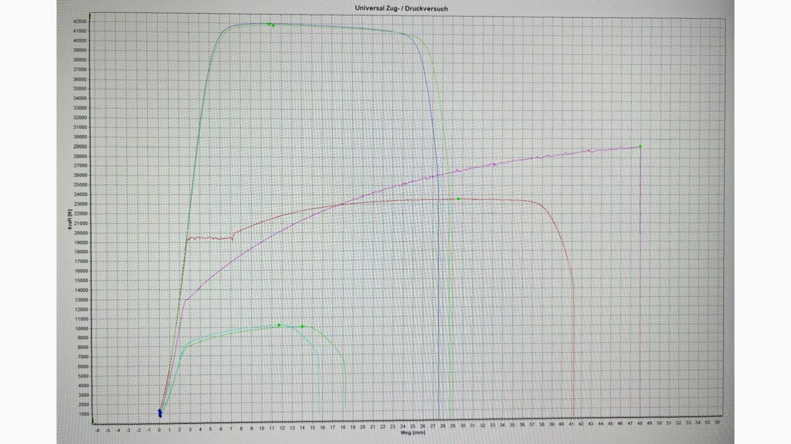
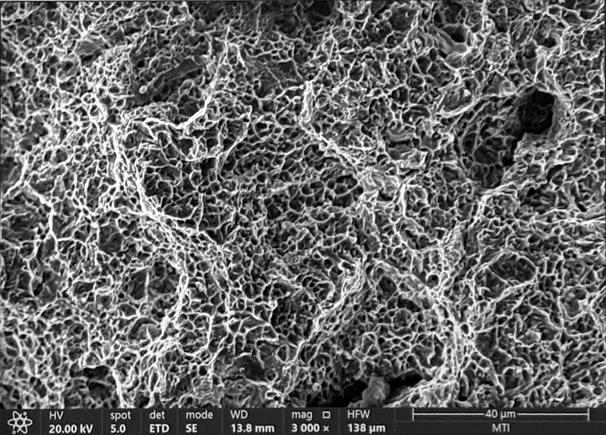
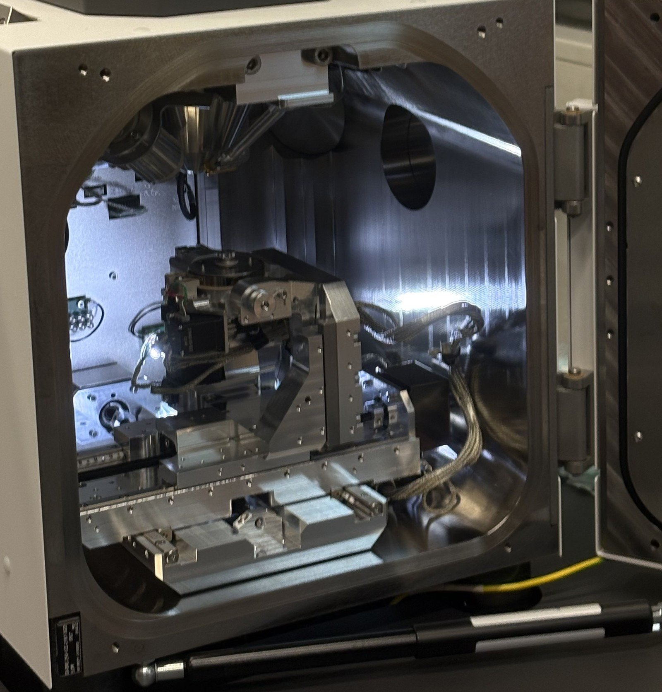

Bruchverhalten von Werkstoffen im ZugversuchFracture behaviour of materials in tensile testing
Rundproben aus Edelstahl, Aluminium, Eisen und Messing bis zum Bruch belastet und über ihre Spannungs-Dehnungs-Kurven verglichen: wie fest ein Werkstoff ist und wie stark er sich vor dem Bruch dehnt. Anschließend die Bruchflächen im Rasterelektronenmikroskop (REM) untersucht, um duktiles – also verformungsreiches – von sprödem Bruchverhalten zu unterscheiden. Entstanden im Kurs Materialtechnologie 2 an der Universität Innsbruck & UMIT TIROL (05/2026).Round specimens of stainless steel, aluminium, iron and brass loaded to failure and compared via their stress-strain curves: how strong a material is and how far it stretches before it breaks. The fracture surfaces were then examined in a scanning electron microscope (SEM) to distinguish ductile – that is, deformation-rich – from brittle fracture behaviour. Carried out in the Materials Technology 2 course at the University of Innsbruck & UMIT TIROL (05/2026).
Aufgabe & AnforderungenTask & requirements
Werkstoffe unterscheiden sich darin, wie fest sie sind, wie stark sie sich verformen, bevor sie brechen, und wie ihre Bruchfläche aussieht. Genau diese Eigenschaften entscheiden bei der Materialwahl.Materials differ in how strong they are, how much they deform before they break, and what their fracture surface looks like. These are exactly the properties that decide a material choice.
Ziel des Versuchs:Aim of the experiment:
- Rundproben aus Edelstahl, Aluminium, Eisen und Messing bis zum Bruch belastenload round specimens of stainless steel, aluminium, iron and brass to failure
- Spannungs-Dehnungs-Verläufe der Werkstoffe vergleichencompare the stress-strain curves of the materials
- die Bruchflächen im REM als duktil oder spröde einordnenclassify the fracture surfaces in the SEM as ductile or brittle
- Mitarbeit bei der VersuchsdurchführungContributed to carrying out the tests
- Vergleich der Werkstoffe im Diagramm und Einordnung der Bruchflächen (duktil/spröde)Compared the materials in the diagram and classified the fracture surfaces (ductile/brittle)
- Laborbericht in LaTeXLab report in LaTeX
Technische UmsetzungTechnical implementation
ZugversuchTensile test
Die Proben wurden eingespannt und mit kontinuierlich steigender Zugkraft bis zum Bruch belastet. Kraft und Weg wurden dabei laufend aufgezeichnet und anschließend über den Ausgangsquerschnitt in technische Spannung umgerechnet.The specimens were clamped and loaded to failure with a continuously increasing tensile force. Force and displacement were recorded throughout and then converted into engineering stress via the original cross-section.

BruchflächenFracture surfaces


Die Bruchstellen habe ich anschließend im Rasterelektronenmikroskop mit Sekundärelektronen- und Rückstreuelektronen-Aufnahmen untersucht. Duktile und spröde Brüche unterscheiden sich dort deutlich in der Struktur der Oberfläche.I then examined the fracture sites in a scanning electron microscope using secondary electron and backscattered electron imaging. Ductile and brittle fractures differ clearly there in the structure of the surface.
ErgebnisseResults
Aluminium und Messing dehnten sich bis zum Bruch deutlich stärker als die anderen Werkstoffe. Edelstahl erreichte die höchste Spannung, verformte sich dabei aber weniger. An den gebrochenen Proben ist der Unterschied direkt sichtbar: Die duktilen Werkstoffe schnüren vor dem Bruch deutlich ein.Aluminium and brass elongated considerably more before failure than the other materials. Stainless steel reached the highest stress but deformed less in doing so. The difference is directly visible on the fractured specimens: the ductile materials neck noticeably before they break.
ErkenntnisseWhat I took away
Steifigkeit, Festigkeit und Verformbarkeit sind drei verschiedene Eigenschaften. Ein Werkstoff kann hohe Spannungen aushalten und trotzdem wenig Verformungsreserve haben. Das zeigt sich im Diagramm und im Bruchbild gleichermaßen.Stiffness, strength and ductility are three different properties. A material can withstand high stresses and still have little deformation reserve. That shows up in the diagram and in the fracture image alike.
Die technische Spannung bezieht die Kraft auf den Ausgangsquerschnitt. Sobald eine Probe einschnürt, liegt die tatsächliche Spannung im Querschnitt deutlich höher, als das Diagramm zeigt.Engineering stress relates the force to the original cross-section. As soon as a specimen necks, the true stress in the cross-section is considerably higher than the diagram shows.